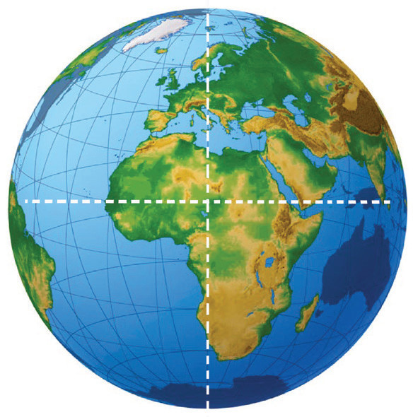

Exercise 2.2
Explain why the orbit of the Earth around the Sun is not a perfect circle?
What is the significance of the distance of the Earth from the Sun?
What is the impact of the Earth’s position in the Solar system on weather elements?
Shape and size of the Earth
Activity 2.4
 Activity 2.4
Activity 2.4In a dimly lit room, shine a flashlight towards a spherical object resting on a flat surface like a table. Make sure the flashlight is switched on and is casting a beam of light on the spherical object. Observe the shadow that appears on the wall.
The Earth is the fifth largest planet in the solar system in terms of size and mass. Its shape is like a flattened sphere known as an oblate spheroid (geoid). The flattening of the Earth is very slight as shown by the measurements of the North-south and East-west distances in Figure 2.3. The distance through the centre from the North Pole to the South Pole is approximately 12713 kilometres, whereas the distance through the centre of the Earth at the Equator is approximately 12757 kilometres. The circumference of the Earth at the equator is about 40085 kilometres while the polar circumference is 39955 (Figure 2.3).

12713 km12757 kmHowever, the earth’s axis is not upright. It is tilted relative to the plane of its orbit. The axial tilting of the Earth refers to the angle between the earth’s rotational axis and a perpendicular to the plane of its orbit around the Sun. The earth’s axis of rotation is an imaginary line that runs from the North Pole to the South Pole. This tilting is approximately 23½° angle. The tilt of this axis is responsible for the changing seasons and variations in daylight hours throughout the year. It is significant in shaping the earth’s climate, seasons, and overall environmental conditions.
Activity 2.5
 Activity 2.5
Activity 2.5Use reliable online sources to search for videos or animations of the Earth’s appearance. Study them and comment on the shape of the Earth and its horizon.
Relate your observations to the evidence that support the shape of the Earth.
The Earth has an oblate spheroid shape. There are several pieces of evidence to justify the spherical shape of the Earth. Such pieces of evidences include the following: